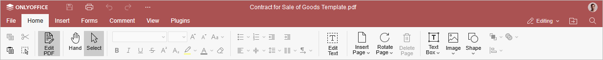
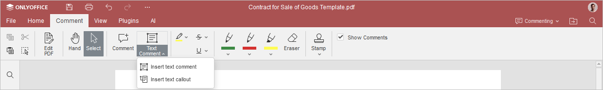
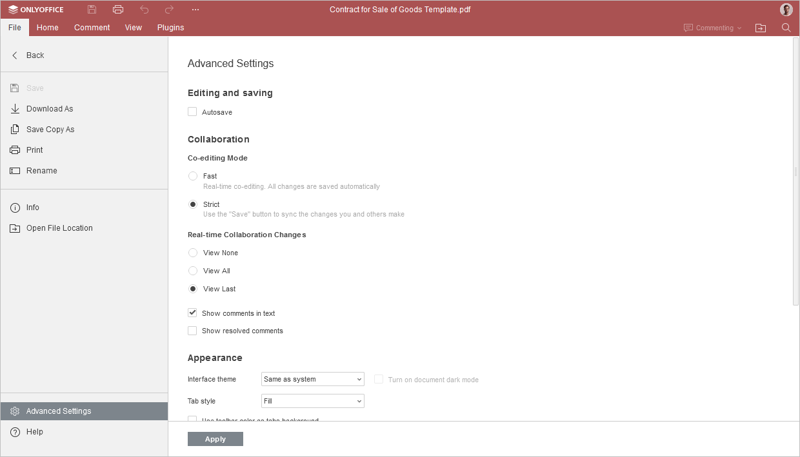

Uređivanje PDF-a
Možete uređivati prethodno otpremljene PDF-ove ili one kreirane korišćenjem ONLYOFFICE PDF Uređivača.
Uređivanje teksta
- Otvorite PDF fajl.
- Ako je PDF fajl otvoren u režimu pregleda ili popunjavanja obrasca, možete preći u režim uređivanja klikom na dugme Uredi PDF na gornjoj alatnoj traci, pod uslovom da imate odgovarajuća prava.
- Kliknite na dugme Uredi tekst na kartici Početna da pokrenete automatski proces označavanja tekstualnih okvira, grafičkih objekata itd.
-
Kliknite na prepoznatu oblast koju želite da uređujete.
-
Za uređivanje prepoznatog teksta, molimo pročitajte sledeće vodiče:

- o promeni fonta, njegove veličine, boje teksta, veličine slova i isticanja;
- o promeni formatiranja teksta;
- o promeni pravca teksta;
- o podešavanju podešavanja lista;
- o promeni uvlačenja;
- o podešavanju razmaka između redova;
- o promeni vertikalnog i horizontalnog poravnanja teksta;
- o deljenju teksta u kolone;
Ove funkcije se nalaze na kartici Početna.
-
Za uređivanje prepoznatog teksta, molimo pročitajte sledeće vodiče:
- Da biste obrisali prepoznatu oblast, izaberite je i pritisnite Delete ili Backspace na tastaturi.
Upravljanje stranicama
Napomena: više stranica možete izabrati držeći Ctrl taster ili opseg stranica držeći Shift taster.
-
Za upravljanje PDF stranicama, idite na karticu Početna:
-
Da ubacite praznu stranicu, kliknite na dugme Umetni stranicu i izaberite da li želite da prazna stranica bude ubačena pre ili posle trenutno izabrane stranice.
Ova opcija je dostupna i preko dugmeta Pregled stranica na levom panelu uređivača. Klikom desnim tasterom miša unutar pregleda stranica izaberite gde želite da ubacite praznu stranicu.
-
Da rotirate stranicu, kliknite na dugme Rotiraj stranicu i izaberite rotiraj ulevo ili rotiraj udesno.
Ova opcija je dostupna i preko dugmeta Pregled stranica na levom panelu uređivača. Klikom desnim tasterom miša izaberite smer rotacije stranice.
-
Da obrišete stranicu, kliknite na dugme Obriši stranicu.
Ova opcija je dostupna i preko dugmeta Pregled stranica. Kliknite desnim tasterom miša i izaberite Obriši stranicu u meniju.
- Da promenite redosled stranica, prevucite stranice na levom panelu.
- Da kopirate i zalepite stranice između PDF fajlova, kopirajte stranice pomoću
Ctrl + Ci nalepite ih u željeni PDF saCtrl + V.
-
Da ubacite praznu stranicu, kliknite na dugme Umetni stranicu i izaberite da li želite da prazna stranica bude ubačena pre ili posle trenutno izabrane stranice.
Rad sa objektima
-
Za umetanje novih ili uređivanje postojećih objekata:
-
Pročitajte vodiče o umetanja tabela, tekstualnih okvira, tekstualne umetnosti, slika, automatski oblik, hiperveza, jednačina i simbola.
Ove funkcije se nalaze na kartici Umetanje.
- Koristite Booleove operacije na oblicima.
-
Za umetanje žigova:
- Idite na karticu Komentari,
- Kliknite na dugme Žigovi,
-
Izaberite jedan od ponuđenih predložaka.
Žigovi funkcionišu kao regularni grafički objekti.
-
Pročitajte vodiče o umetanja tabela, tekstualnih okvira, tekstualne umetnosti, slika, automatski oblik, hiperveza, jednačina i simbola.
Saradnja
-
Da olakšate saradnju na PDF-u, pročitajte sledeće vodiče:
-
o dodavanju komentara, isticanju i crtanje.
Ove funkcije se nalaze na kartici Saradnja (za režim uređivanja) ili na kartici Komentari (za režim prikaza). Da sakrijete komentare, poništite Prikaži komentare polje za potvrdu.
Napomena: Komentare možete dodati selektovanjem odgovarajućeg segmenta teksta i klikom na ikonu komentara u otvorenom meniju; komentare možete i obrisati.
Da biste istakli izabrani tekst:
- Selektujte tekstualni deo.
- Kliknite na ikonu markera u otvorenom meniju; možete promeniti boju ili providnost markera.
Takođe možete dodati tekstualne komentare koristeći karticu Komentari.
- Idite na karticu Komentari.
- Kliknite na dugme Tekstualni komentar.
-
Izaberite tip komentara koji želite:
- Umetni tekstualni komentar - komentar se pojavljuje kao tekstualni okvir koji može da se pomera po stranici.
- Umetni tekstualni poziv - komentar se pojavljuje kao tekstualni okvir sa linijom koja vodi do tačnog mesta na stranici.

-
o dodavanju komentara, isticanju i crtanje.
-
Saradnja:

-
Podsekcija Režim zajedničkog uređivanja omogućava izbor željenog režima prikaza promena u saradnji na dokumentu.
- Brzi. Saradnici vide promene u realnom vremenu čim ih drugi korisnici unesu.
- Strog (podrazumevano). Sve promene se prikazuju tek nakon što kliknete na dugme Sačuvaj koje vas obaveštava o novim izmenama.
-
Podsekcija Promene u realnom vremenu omogućava izbor kako će biti prikazane nove promene i komentari u realnom vremenu.
- Ne prikazuj. Sve promene u toku sesije neće biti istaknute.
- Prikaži sve. Sve promene iz tekuće sesije biće istaknute.
- Prikaži poslednje. Samo promene načinjene od poslednjeg klika na dugme Sačuvaj biće istaknute. Dostupno samo uz režim Strog.
- Prikaži komentare u tekstu. Ako isključite ovu opciju, komentarisane delove teksta videćete samo klikom na ikonu Komentari na levom panelu.
- Prikaži rešene komentare. Podrazumevano je ova opcija isključena kako bi rešeni komentari bili skriveni u tekstu. Možete ih videti samo klikom na ikonu Komentari. Omogućite da biste prikazali rešene komentare u tekstu.
-
Podsekcija Režim zajedničkog uređivanja omogućava izbor željenog režima prikaza promena u saradnji na dokumentu.
Navigacija, dodaci
Za navigaciju kroz PDF-ove, pogledajte vodič o opcijama dostupnim na kartici Prikaz.
Kartica Dodaci omogućava upravljanje vašim dodacima. Za više informacija o svakom dodatku, pogledajte sekciju Dodaci u okviru Uređivača dokumenata.